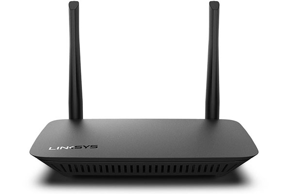
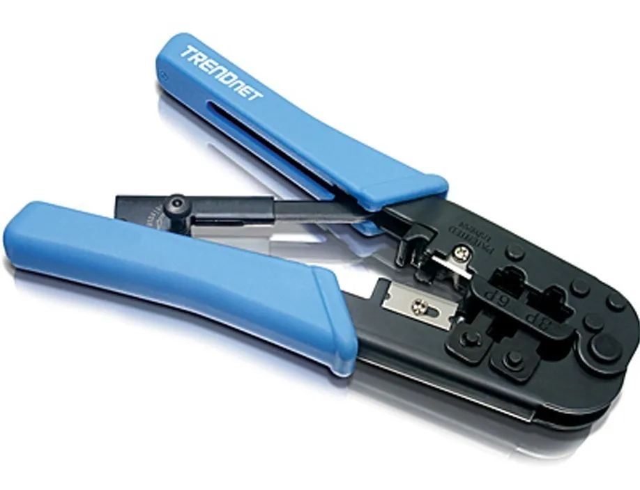
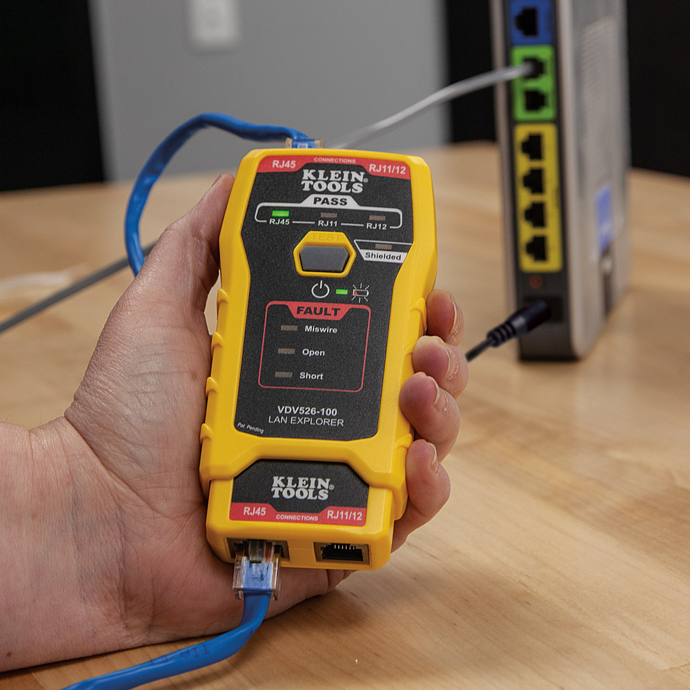
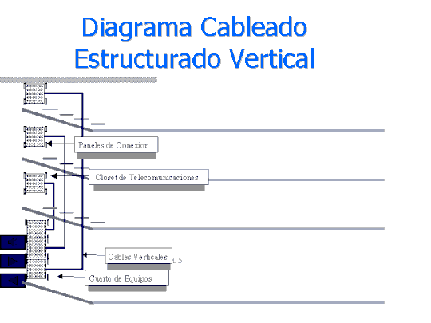
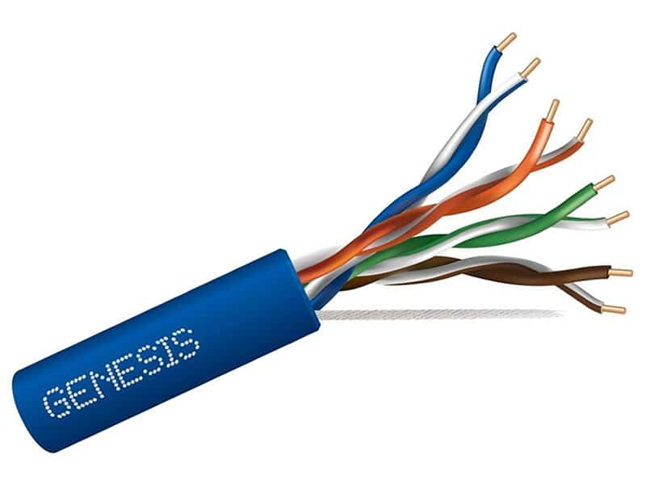
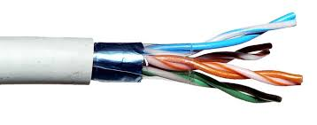
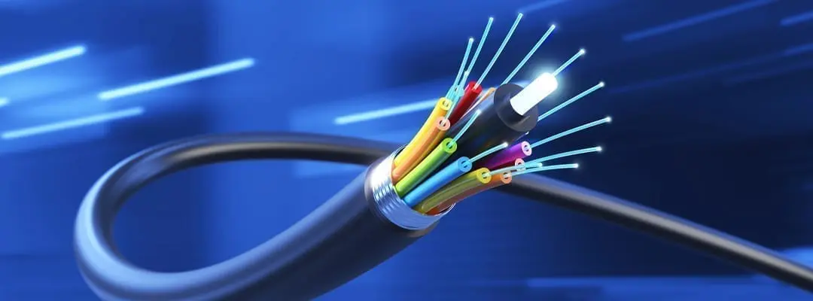
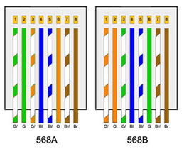
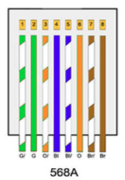
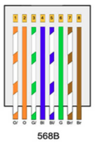

3. ¿Qué son los componentes activos en la Red?
Los componentes activos de una red son aquellos que requieren alimentación eléctrica para funcionar y tienen la
capacidad de amplificar, regenerar, y direccionar señales dentro de la red. Estos componentes son fundamentales
para la transmisión y gestión de datos entre dispositivos de red.

4. Descripción técnica de cada componente activo
- Switch: Dispositivo de red que conecta varios dispositivos dentro de una misma red local (LAN), operando en la
capa 2 del modelo OSI. Permite la comunicación directa entre dispositivos y gestiona el tráfico de datos para
evitar colisiones.

- Router: Dispositivo que dirige el tráfico de datos entre diferentes redes. Opera en la capa 3 del modelo OSI y
decide la ruta más eficiente para que los datos lleguen a su destino.

- Tarjeta de red (NIC - Network Interface Card): Componente de hardware que permite a una computadora o
dispositivo conectarse a una red, ya sea mediante un cable Ethernet o de forma inalámbrica.

- Access Point: Dispositivo que crea una red inalámbrica (Wi-Fi) y permite que dispositivos inalámbricos se
conecten a una red cableada. Puede expandir la cobertura de una red existente.

5. Herramientas utilizadas para realizar cableado estructurado
- Ponchadora: Herramienta utilizada para conectar cables de red a conectores RJ45. Al presionar la ponchadora,
se asegura una conexión sólida y fiable entre los cables y los pines del conector.

- Crimpadora: Similar a la ponchadora, esta herramienta se utiliza para fijar conectores a los extremos de los
cables, comprimiendo los contactos metálicos dentro del conector RJ45.
- Desforradora: Herramienta utilizada para retirar la cubierta exterior de los cables sin dañar los conductores
internos. Es esencial para preparar cables antes de conectarlos.

- Tester/probador de cables: Dispositivo utilizado para comprobar la continuidad, la integridad y la correcta
conexión de los cables de red. Ayuda a identificar fallos o cables mal conectados.

6. ¿Qué es el cableado horizontal?
El cableado horizontal es la parte del sistema de cableado estructurado que se extiende desde los paneles de
conexión (patch panels) hasta las áreas de trabajo en un edificio. Este tipo de cableado suele estar contenido
en canaletas o conduits y es fundamental para conectar puntos de acceso de red (como computadoras o impresoras)
con los dispositivos de interconexión de la red (switches, routers).

7. ¿Qué es el cableado Vertical?
El cableado vertical, también conocido como backbone, es el sistema de cables que conecta diferentes pisos o
áreas de un edificio a un punto central de distribución de red. Este cableado es esencial para interconectar
todos los sistemas de una organización y suele utilizar cables de mayor capacidad como fibra óptica para
soportar altos volúmenes de tráfico de datos entre diferentes segmentos de la red.

8. Tipos de cables para el sistema de cableado horizontal
- Cable UTP: Es el tipo de cable más común para cableado horizontal. Consiste en pares de cables trenzados sin
blindaje, lo que lo hace más flexible y fácil de instalar. Es ideal para redes de oficina y hogares.

- Cable STP: Similar al UTP, pero con un blindaje adicional para proteger contra interferencias
electromagnéticas. Se utiliza en ambientes con alta interferencia.

- Cable de Fibra Óptica: Utiliza fibra de vidrio o plástico para transmitir datos como pulsos de luz. Ofrece
velocidades de transmisión muy altas y no es susceptible a interferencias electromagnéticas.Es utilizado en
redes que requieren alta velocidad y en distancias largas.

9. Normativa para hacer cables de red (Clase A y B)
Norma TIA/EIA-568-B: Define dos estándares para el cableado de redes de par trenzado: T568A y T568B.

T568A: Es el estándar más antiguo y se utiliza principalmente en instalaciones gubernamentales en Estados
Unidos.

T568B: Es el más utilizado a nivel mundial en instalaciones residenciales y comerciales. La diferencia entre
ambos es el orden de los colores de los hilos en el conector RJ-45.

10. ¿Para qué se utiliza un cable directo en la red?
Se utiliza para conectar dispositivos de diferentes tipos, como un ordenador a un switch o router. En un cable
directo, ambos extremos están configurados con el mismo estándar (T568A o T568B).
11. ¿Para qué se utiliza un cable cruzado en la red?
Se utiliza para conectar dispositivos del mismo tipo entre sí, como conectar dos ordenadores directamente o dos
switches. En un cable cruzado, un extremo sigue la norma T568A y el otro la T568B.
Fuentes